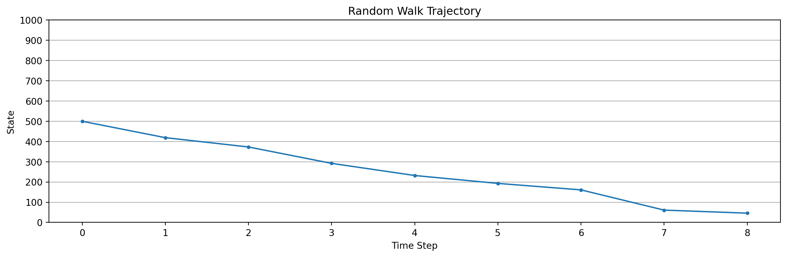
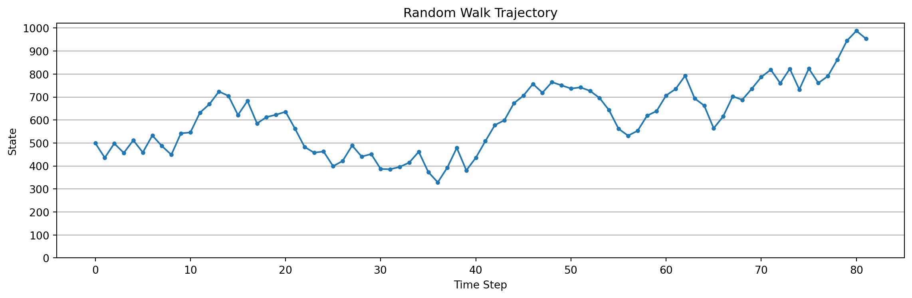
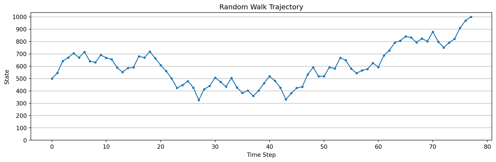

import gymnasium as gym
from gymnasium import spaces
import numpy as np
class RandomWalk1000(gym.Env):
def __init__(self, num_states=1000, neighborhood_size=100, seed=None):
super().__init__()
self.num_states = num_states
self.neighborhood_size = neighborhood_size
self.observation_space = spaces.Discrete(num_states + 2) # add two states 0 and num_states + 1 as terminal states
self.action_space = spaces.Discrete(2) # 0 for left, 1 for right
self.current_state = 500 # start in the middle
self.np_random, seed = gym.utils.seeding.np_random(seed)
self.trajectory = [500]
def reset(self, *, seed=None, options=None):
super().reset(seed=seed)
self.current_state = 500
self.trajectory = [500]
return self.current_state, {}
def step(self, action):
if action == 0: # move left
# left neighbours
left_start = max(1, self.current_state - self.neighborhood_size)
left_end = self.current_state
num_left = left_end - left_start
if left_start == 1:
prob_terminate_left = (self.neighborhood_size - num_left) / self.neighborhood_size
else:
prob_terminate_left = 0
if self.np_random.random() < prob_terminate_left:
return 0, -1, True, False, {} # terminate left
next_state = self.np_random.integers(low=left_start, high=left_end)
elif action == 1: # move right
# right neighbours
right_start = self.current_state + 1
right_end = min(self.num_states + 1, self.current_state + self.neighborhood_size + 1)
num_right = right_end - right_start
if right_end == self.num_states + 1:
prob_terminate_right = (self.neighborhood_size - num_right) / self.neighborhood_size
else:
prob_terminate_right = 0
if self.np_random.random() < prob_terminate_right:
return self.num_states + 1, 1, True, False, {} # terminate right
next_state = self.np_random.integers(low=right_start, high=right_end)
else:
raise ValueError("Invalid action")
self.current_state = next_state
self.trajectory.append(self.current_state)
return self.current_state, 0, False, False, {} # not terminated or truncated
import matplotlib.pyplot as plt
def plot_trajectory(trajectory, num_states):
"""Plots the trajectory of the random walk."""
x = np.arange(len(trajectory))
y = np.array(trajectory)
plt.figure(figsize=(12, 4))
plt.plot(x, y, marker='o', linestyle='-', markersize=3)
plt.xlabel('Time Step')
plt.ylabel('State')
plt.title('Random Walk Trajectory')
plt.yticks(np.arange(0, num_states+2, 100))
plt.grid(axis='y')
plt.tight_layout()
plt.show()

Introduction
Readings
This is not a video lecture or notes for a learning goal. This is however my attempts to cover some material from the readings from chapter 9 of [@sutton2018reinforcement] mentioned above.
I’ve added this material about a year after completing the specialization as I have been taking a course on deep reinforcement learning. I had felt that the material in this course had been both challenging on occasion and rather basic on others.
I don’t think I would have would have gone ahead and created this unit without looking at the material by Shangtong Zhang at https://github.com/ShangtongZhang/reinforcement-learning-an-introduction In which he reproduced some of the figures from the book. However this is my own implementation and though similar to some of the course material - I follow the Coursera Honor code and this is not likely to be much help to anyone working on the programming assignments which is a different environment, uses RL-glue and an implementation of tile coding.
What I felt was that I was not happy about the basics in this chapter. This includes the parameterization of the value function, the convergence results regarding linear function approximation. The ideas about why TD is a semi-gradient method etc.
I am also having many idea about both creating algorithms for creating features for RL environments. As I get familiar with gridwolds, atari games, sokoban etc I had many good ideas for making progress in both these environments and for improving algorithms for more general cases.
For example it appears that in many papers it turns out the agents are not learning very basic abilities. My DQN agent for space invaders was very poor at shooting bullets. I had an few ideas that should make a big difference. Like adding features for bullets, the invaders and so on. This are kind of challenging to implement in the current gymnasium environments. However I soon had a much more interesting idea that seems to be good for many of the atari environments and quite possibly even more broadly to most cnn based agents.
- In brief this would combine
- a multiframe YOLO,
- a generelised value function to replace YOLO’s supervision
- a ‘robust’ causal attention mechanism to decide which pixels are more or less important
- dropping them would not impact performance. e.g. bullets
- which affect survival e.g. certain bullets
- for scoring e.g. mother ship
- which ones we can influence e.g. standing under an invader gets it to shoot at us.
Note this is not the causal attention mechanism from NLP where one censored the future inputs but rather a mechanism that decides which pixels represent features that are potentialy the cause of the future states.
Clearly this Algorithm and its parts need to be worked out in a very simple environment. The YOLO part is all about modeling features using bounding boxes via a single pass. The GVFs are to replace yolo supervision loss with a RL compatible loss and the causal attention to reduce the overfitting and speed up learning.
I decided that converting some of these simple environments to gymnasium environments would be a good way to kick start some of these ideas, more so as reviewing papers and talks by Adam and Martha White shows that most experiments in RL environments turn out to be too complicated and access to simple environments turns out to be the way to get the experiments started.
In this chapter we use a simple environment called the 1000 state Random walk. I implemented this independently in Python.
We also learned the MC prediction algorithm and the TD(0) algorithms for function approximation.
We will use these algorithms to learn the value function of the Random Walk 1000 environment. We will also use tile coding and coarse coding to create features for the Random Walk 1000 environment.
Feature Construction & linear Function approximation
Learning Objectives
In this module we consider environments that allow to consider simple state aggregationI’d like to cover the following topics:
-
- This will allow to use it with many RL agents built using many libraries.
-
- This environment can be a basis for looking at how Temporal Abstraction aggregation play with function approximation in a highly simplified form.
- This is a fundamental issue that Doina Precup has raised in her talks as an ongoing area of research.
- So such an environment might be useful in testing how different approaches can handle these issues in an environment that is very close to supervised learning.
- implement Gradient MC agent
- implement Semi Gradient TD(0) agent
- use these agents with and without state aggregation to learn the value function of the Random Walk 1000 environment.
- implement coarse coding via tile coding to create features for the Random Walk 1000 environment.
- implement use of polynomial features to create features for the Random Walk 1000 environment.
- implement use of radial basis functions to create features for the Random Walk 1000 environment.
- implement use of Fourier basis functions to create features for the Random Walk 1000 environment.
The 1000 Step Random Walk Environment
In this lesson we implement the 1000 Random Walk example as an environment. This is good to demonstrate how to construct features for linear methods. We will use tile coding and coarse coding to create features for the Random Walk 1000 environment.
#import gymnasium as gym
#from random_walk_gym import RandomWalk1000
env = RandomWalk1000()
# Reset the env
obs, info = env.reset()
terminated = False
while not terminated:
# For this environment, an action is not needed.
# Here we pass in a dummy value
obs, reward, terminated, truncated, info = env.step(0)
print(f"State: {obs + 1}, Reward: {reward}, Terminated: {terminated}")
env.close()
plot_trajectory(env.trajectory, num_states=env.num_states)State: 442, Reward: 0, Terminated: False
State: 422, Reward: 0, Terminated: False
State: 408, Reward: 0, Terminated: False
State: 348, Reward: 0, Terminated: False
State: 267, Reward: 0, Terminated: False
State: 263, Reward: 0, Terminated: False
State: 218, Reward: 0, Terminated: False
State: 173, Reward: 0, Terminated: False
State: 125, Reward: 0, Terminated: False
State: 31, Reward: 0, Terminated: False
State: 1, Reward: -1, Terminated: True
env = RandomWalk1000(num_states=1000, neighborhood_size=100)
obs, info = env.reset()
terminated = False
truncated = False
trajectory = []
while not terminated and not truncated:
action = env.action_space.sample() # Replace with your policy
obs, reward, terminated, truncated, info = env.step(action)
print(f'{obs=}, {action=}, {reward=}, {terminated=}')
plot_trajectory(env.trajectory, num_states=env.num_states)obs=579, action=1, reward=0, terminated=False
obs=538, action=0, reward=0, terminated=False
obs=543, action=1, reward=0, terminated=False
obs=587, action=1, reward=0, terminated=False
obs=541, action=0, reward=0, terminated=False
obs=487, action=0, reward=0, terminated=False
obs=436, action=0, reward=0, terminated=False
obs=501, action=1, reward=0, terminated=False
obs=524, action=1, reward=0, terminated=False
obs=586, action=1, reward=0, terminated=False
obs=489, action=0, reward=0, terminated=False
obs=586, action=1, reward=0, terminated=False
obs=646, action=1, reward=0, terminated=False
obs=627, action=0, reward=0, terminated=False
obs=680, action=1, reward=0, terminated=False
obs=776, action=1, reward=0, terminated=False
obs=765, action=0, reward=0, terminated=False
obs=826, action=1, reward=0, terminated=False
obs=812, action=0, reward=0, terminated=False
obs=720, action=0, reward=0, terminated=False
obs=673, action=0, reward=0, terminated=False
obs=574, action=0, reward=0, terminated=False
obs=674, action=1, reward=0, terminated=False
obs=662, action=0, reward=0, terminated=False
obs=761, action=1, reward=0, terminated=False
obs=802, action=1, reward=0, terminated=False
obs=813, action=1, reward=0, terminated=False
obs=770, action=0, reward=0, terminated=False
obs=848, action=1, reward=0, terminated=False
obs=852, action=1, reward=0, terminated=False
obs=931, action=1, reward=0, terminated=False
obs=1001, action=1, reward=1, terminated=True
Lets simulate the random walk till success and plot its trajectory.
env = RandomWalk1000(num_states=1000, neighborhood_size=100)
obs, info = env.reset()
terminated = False
truncated = False
while not terminated and not truncated:
action = env.action_space.sample() # Replace with your policy
obs, reward, terminated, truncated, info = env.step(action)
plot_trajectory(env.trajectory, num_states=env.num_states)
A short digression on Einstein Tiling for RL
One (awful) Idea I keep returning to is to use Einstein Tiling for RL. I mentino that Einstein in this context is not the physicist but rather a pun on the word ‘Einstein’ which means ‘one stone’ in German.
Let’s quickly review why it is a bad idea, and then why it is also a fascinating idea.
Unlike A square tiling this is an aperiodic tiling so we need to generate it efficiently. Depending on the space it will may take some time to generate the tiling. We need to store the tiling in memory. For a square tiling we can generate the tiling in a few lines of code. We can access the tiling or tile using a simple formula.
We need a quick way to find which tile a point is in. This is not to hard for one tile. But as the number of tiles increases this becomes more difficult. It is trivial for a square tiling where again we have a formula to efficiently determine the tile a point belongs to.
Some reasons why it is a fascinating idea.
- We only need one tiling. If we have one we can map the first tile ton any other location it is in the same orientation and we will get a new tiling! This is due to the aperiodic nature of the tiling.
- The hat tile is constructed by glueing together eight smaller kite tiles that are sixth of a hexagon. We can easily use larger kites that so we can use two such grids as coarse and coarser tilings.
- Different can be similar locally but will tend to diverge. This suggest that we will get a good generalization.
- There may be variant einsteins that are easier to generate and use
- In https://www.ams.org/journals/proc/1995-123-11/S0002-9939-1995-1277129-X/ the authors show that for d>=3 aperiodic tilings can naturally avoid more symmetries than just translations. I.e. we can have a periodic tilings in higher dimensions.
I may be wrong but It may be possible to generate the tiling using a simple formula. Ok so far tiling generation is insanely complicated. Though this is not a judgment on the complexity of the tiling but rather the complexity of the code and mathematics to generate the tiling.
The hat tile allows one to create many different tilings of the state space in two dimensions. Each tiling is going to have a different set of features.
As the hat tile is constructed by glueing together eight smaller tiles. Tilings are created in a hierarchical manner. This suggests that we can will get fine and course feature in this process and that we can just keep going to increase discrimination.
Some issues - it is possible to get two tilings that are the same but for a ‘conway worm’ this is a curve in the tiling that is different. The problem here is that the features will be the same for every where except the worm. Not good for generalization.